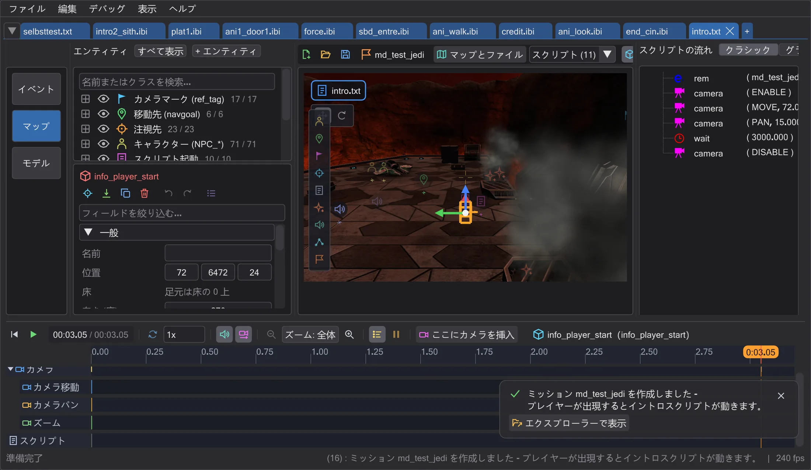
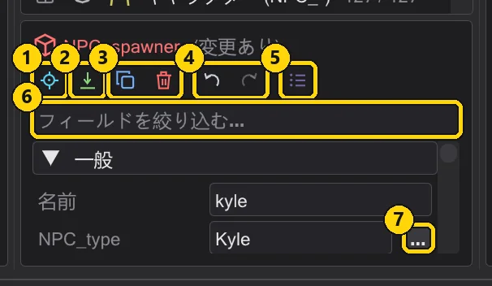
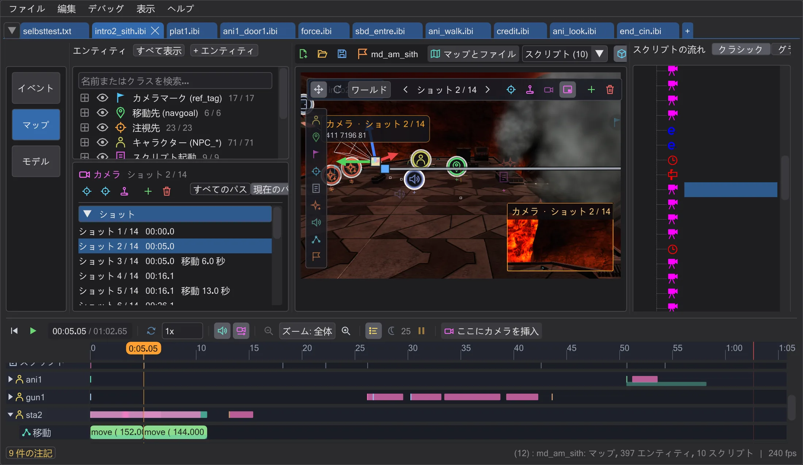
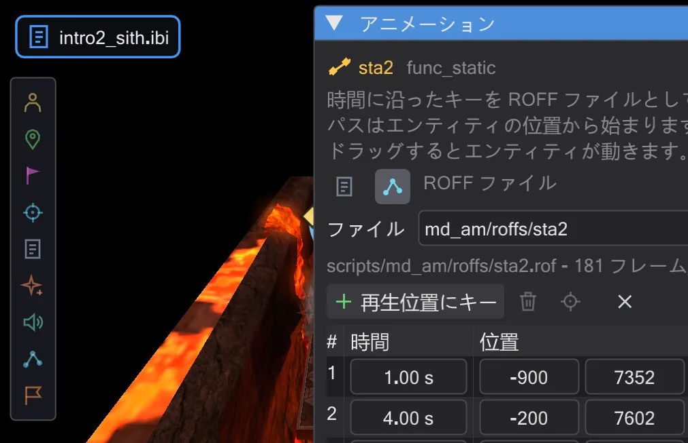
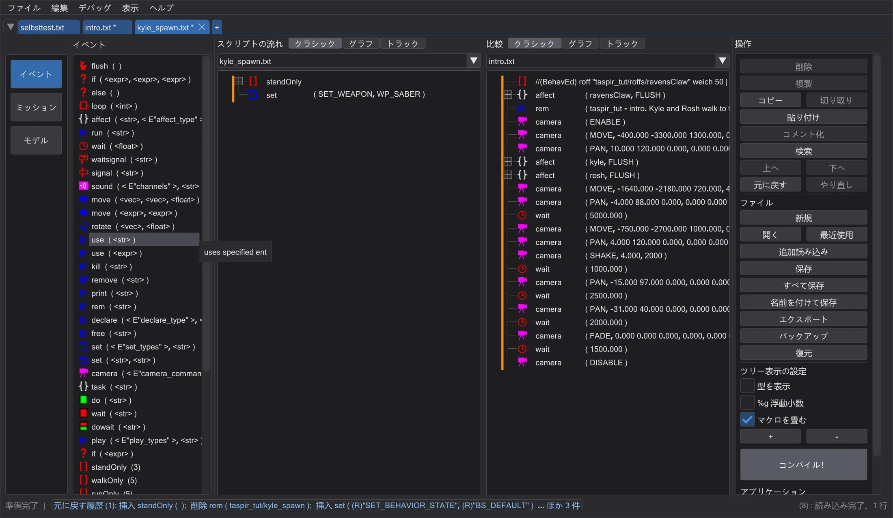
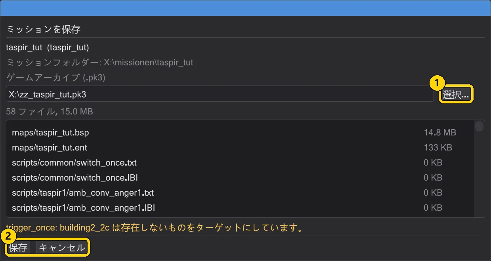

自分だけのミッション:Taspir からの離陸
Jedi Academy 用の小さな完全なミッションを、ゼロから作ります。Kyle と Rosh が着陸パッドを歩いて横切り、カメラが 2 人を追い、Raven's Claw が離陸してカメラの横を飛び去り、画面が揺れて黒にフェードアウトします。そして、それをゲームが再生します。
 アニメーション
アニメーションこのチュートリアルは基本ゲームだけを使います。マップ taspir1(Taspir III ミッションの冒頭にある着陸パッド)と、Kyle の船 Raven's Claw、キャラクターの Kyle と Rosh です。必要なのは Jedi Academy と BehavEd だけです。以降のページの画像はすべて、まさにこのミッションを一歩ずつ作りながら撮影したものです。
各部#

1 · ミッションを作成する
taspir1 上の新しいミッション。マップ、プレイヤースタート、スクリプトランナー、イントロスクリプトが自動で作られます。

2 · キャラクターを配置する
パッドの南端に Kyle と Rosh を置き、船の前にそれぞれの移動先を置きます。

3 · 歩かせる
キャラクターごとに affect ブロックを 1 つ。目標まで歩き、到着するまで待ち、それからもう 1 人を見ます。

4 · カメラ
パッドの全景と、2 人の後ろへ下りていくカメラ移動。ビューから設定し、手で操縦して仕上げます。

5 · 船が離陸する
Raven's Claw を 4 つのキーでアニメートし、その飛行を ROFF ファイルとして保存します。

6 · カット・揺れ・追従・フェード
パッドの外からの 3 つ目のショット、離陸時の揺れ、船を追って向きを変えるカメラ、黒へのフェード。そしてタイムラインでタイミングを整えます。

7 · 2 つ目のスクリプト
Kyle にマクロ入りのスポーンスクリプトを付けます。分割表示で 2 つのスクリプトを並べて表示します。

8 · 保存してプレイする
ミッションをチェックし、.pk3 にまとめ、ゲームで起動します。
始める前に#
- 最初に一度だけゲームフォルダーを追加します。編集 → ゲームフォルダー → ゲームフォルダーを追加… → Jedi Academy の
baseフォルダー(assets0.pk3があるフォルダー)。ゲームフォルダーを指定する を参照。 - ウィンドウに慣れていなければ、まず ウィンドウ を読んでください。5 分で読めます。
- すべて Ctrl+Z で元に戻せます。ゲームのファイルが変更されることはありません。ミッションは専用のフォルダーと専用の
.pk3に入ります。